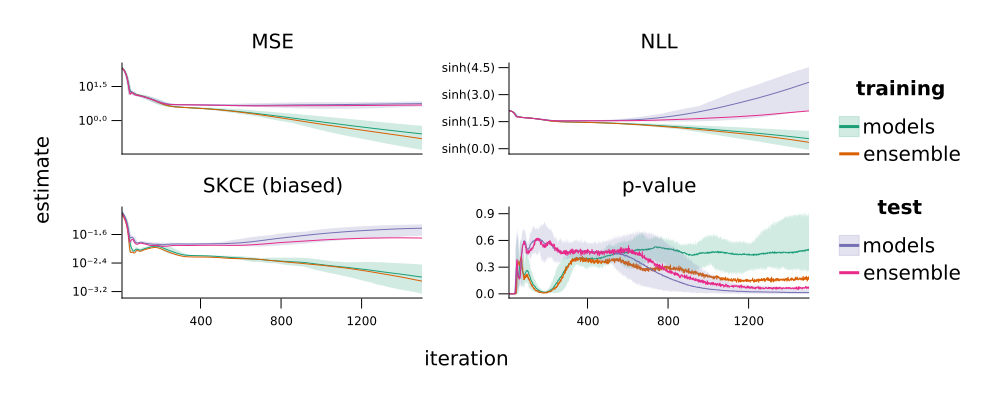

Home
This webpage accompanies the paper "Calibration tests beyond classification" by David Widmann, Fredrik Lindsten, and Dave Zachariah, which will be presented at ICLR 2021.

The source code for the paper, the experiments therein, and also this webpage are available on Github.
Abstract
Most supervised machine learning tasks are subject to irreducible prediction errors. Probabilistic predictive models address this limitation by providing probability distributions that represent a belief over plausible targets, rather than point estimates. Such models can be a valuable tool in decision-making under uncertainty, provided that the model output is meaningful and interpretable. Calibrated models guarantee that the probabilistic predictions are neither over- nor under-confident. In the machine learning literature, different measures and statistical tests have been proposed and studied for evaluating the calibration of classification models. For regression problems, however, research has been focused on a weaker condition of calibration based on predicted quantiles for real-valued targets. In this paper, we propose the first framework that unifies calibration evaluation and tests for general probabilistic predictive models. It applies to any such model, including classification and regression models of arbitrary dimension. Furthermore, the framework generalizes existing measures and provides a more intuitive reformulation of a recently proposed framework for calibration in multi-class classification. In particular, we reformulate and generalize the kernel calibration error, its estimators, and hypothesis tests using scalar-valued kernels, and evaluate the calibration of real-valued regression problems.